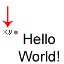
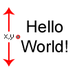
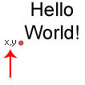

draw_set_valign(valign);
| Argumento | Descripción |
|---|---|
| valign | Alineamiento vertical. |
Devoluciones: N / A
Esta función se utiliza para alinear texto a lo largo del eje vertical y al cambiar la alineación vertical se cambiará la posición y la dirección en la que se dibuja todo el texto adicional, con el valor predeterminado siendo fa_top. Se aceptan las siguientes constantes:
| Constante | Alineación |
|---|---|
| fa_top |  |
| fa_middle |  |
| fa_bottom |  |
draw_set_halign(fa_center);
draw_set_valign(fa_middle);
draw_text(100, 32, "Score: " + string(score));
El código anterior dibujará el puntaje centrado alrededor del centro mismo del texto.